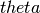
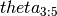

This is my write-up for Assignment 4
Most of the code to implement this assignment is in psc585.FinalModel. The attributes of this class includes the data from FinalModel.mat and FinalData.mat provided with the assignment.
The method psc585.FinalModel.new_p() implements NewP; psc585.FinalModel.phigprov() implements Phihprov; psc585.FinalModel.ptilde() implements Ptilde.
The Nested Pseudo Likelihood estimator described in part (d) is implemented in the method psc585.FinalModel.npl().
The maximization of the partial pseudo-likelihood estimator in part (e) is implemented in the method psc585.argmax_theta().
The code I use to generate starting values and estimate the model is below,
After 100 iterations, the results have not converged. These are the values of  and the relative residual for the last 20 iterations. The values of  appear to be cycling around a value, and slowly converging.
80 0.000001
[ 0.14802708 0.61599627 1.97378748 0.09603969 0.74430638]
81 0.000001
[ 0.14802702 0.61599628 1.97378744 0.09603882 0.74430736]
82 0.000001
[ 0.14802702 0.61599629 1.97378744 0.09603942 0.74430656]
83 0.000001
[ 0.14802707 0.61599628 1.97378747 0.09604011 0.74430578]
84 0.000001
[ 0.14802707 0.61599627 1.97378747 0.09603964 0.74430641]
85 0.000001
[ 0.14802703 0.61599628 1.97378744 0.09603909 0.74430704]
86 0.000001
[ 0.14802703 0.61599629 1.97378745 0.09603946 0.74430653]
87 0.000001
[ 0.14802706 0.61599628 1.97378747 0.09603991 0.74430604]
88 0.000001
[ 0.14802706 0.61599628 1.97378747 0.09603961 0.74430644]
89 0.000001
[ 0.14802704 0.61599628 1.97378745 0.09603925 0.74430683]
90 0.000000
[ 0.14802704 0.61599628 1.97378745 0.09603949 0.74430651]
91 0.000000
[ 0.14802706 0.61599628 1.97378746 0.09603977 0.7443062 ]
92 0.000000
[ 0.14802706 0.61599628 1.97378746 0.09603958 0.74430645]
93 0.000000
[ 0.14802704 0.61599628 1.97378745 0.09603936 0.7443067 ]
94 0.000000
[ 0.14802704 0.61599628 1.97378745 0.09603951 0.7443065 ]
95 0.000000
[ 0.14802705 0.61599628 1.97378746 0.09603969 0.7443063 ]
96 0.000000
[ 0.14802705 0.61599628 1.97378746 0.09603957 0.74430646]
97 0.000000
[ 0.14802704 0.61599628 1.97378745 0.09603942 0.74430662]
98 0.000000
[ 0.14802704 0.61599628 1.97378745 0.09603952 0.74430649]
99 0.000000
[ 0.14802705 0.61599628 1.97378746 0.09603963 0.74430637]